This article retains its original experiments and examples. For current package usage, see the usage guide.
The delta-bar-delta method used for optimizing t-SNE is an adaptive learning rate technique that was originally suggested for neural network training. It is mentioned in the same set of lecture notes that described the RMSprop (PDF) stochastic gradient method.
Unlike stochastic gradient methods, DBD is meant for batch learning and only uses the sign of the gradient, whereas SGD methods need to take into account the magnitude of the gradient too. Given what I consider to be the surprisingly good performance of DBD compared to methods like L-BFGS (see the optimization for details), it would be interesting (to me) to see how SGD methods perform. They certainly have an advantage of traditional unconstrained optimization methods as being much easier to implement.
But which optimizer? A good reference is Sebastian Ruder’s overview. They all seem about equally straight-forward to implement, and compared to traditional unconstrained optimization methods, they are a breeze.
I have no expectation that any of these should work well, but then again, I defy anyone to have predicted that delta-bar-delta would work well for t-SNE, so let’s just try all of them:
- Adagrad
- Adadelta modifies Adagrad to stop the learning rate decaying to zero.
- RMSProp (PDF) is similar to Adadelta in that is also modifies Adagrad to prevent zero learning rates.
- Adam attempts to estimate mean and variance of the gradient estimates, incorporating a bias correction.
- Adamax a variant on Adam using the infinity norm.
- Nadam (PDF), Adam modified to use Nesterov momentum.
- AMSGrad is a variant that corrects a flaw in Adam’s convergence under some circumstances.
Datasets
See the Datasets page.
Evaluation
Apart from visualizing the results, the mean neighbor preservation of
the 40 closest neighbors is used to provide a rough quantification of
the quality of the result, labelled as mnp@40 in the
plots.
Settings
Here’s an example of generating the t-SNE results with Adam.
The Adam results differ from the recommended defaults given by the
authors for deep learning. I settled on these values by experimenting
with the iris dataset results.
# Adagrad
iris_adagrad <- smallvis(
iris,
scale = FALSE,
perplexity = 40,
Y_init = "spca",
opt = list("adagrad", eta = 5)
)
# Adadelta
iris_adadelta <- smallvis(
iris,
scale = FALSE,
perplexity = 40,
Y_init = "spca",
opt = list("adadelta"),
tol = 0
)
# RMSProp
iris_rmsprop <- smallvis(
iris,
scale = FALSE,
perplexity = 40,
Y_init = "spca",
opt = list("rmsprop", eta = 0.25, rho = 0.8)
)
# Adam
iris_adam <- smallvis(
iris,
method = "tsne",
perplexity = 40,
max_iter = 1000,
verbose = TRUE,
Y_init = "spca",
scale = FALSE,
ret_extra = c("dx", "dy"),
opt = list("adam", eta = 0.25, beta1 = 0.8)
)
# Nadam
iris_nadam <- smallvis(
iris,
scale = FALSE,
perplexity = 40,
Y_init = "spca",
opt = list("nadam", eta = 0.25, beta1 = 0.8)
)
# Adamax
iris_adamax <- smallvis(
iris,
scale = FALSE,
perplexity = 40,
Y_init = "spca",
opt = list("adamax", eta = 1, beta1 = 0.9)
)
# AMSGrad
iris_amsgrad <- smallvis(
iris,
scale = FALSE,
perplexity = 40,
Y_init = "spca",
opt = list("amsgrad", eta = 0.25, beta1 = 0.8)
)Evaluation
For each initialization, the mean neighbor preservation of the 40
nearest neighbors, calculated using the quadra package: for each
point the 40 nearest neighbors are calculated in the input and output
space, and the fraction of neighbors in common is recorded (0 means no
neighbors are in common, 1 means all the neighbors were preserved). The
number reported is the mean average over all results and is labelled as
mnp@40 in the plots. 40 was chosen for these results to
match the perplexity.
Results
The DBD results are on the left, the Adam results are on the right.


Frey Faces
 |
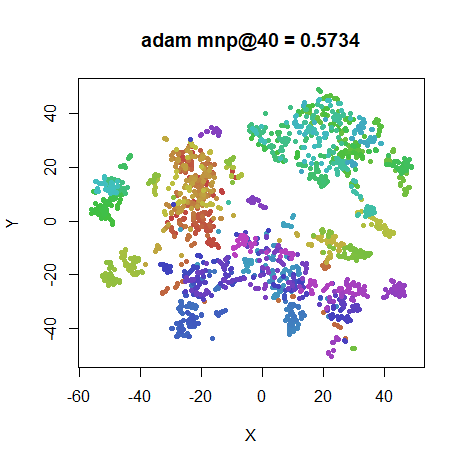 |
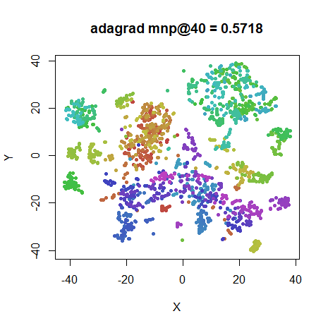 |
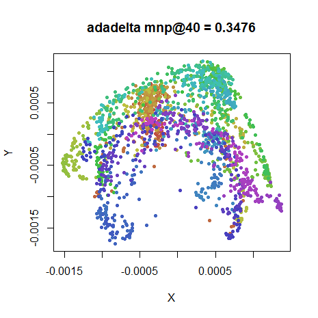 |
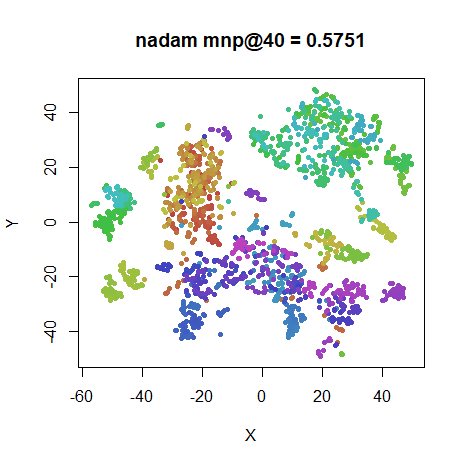 |
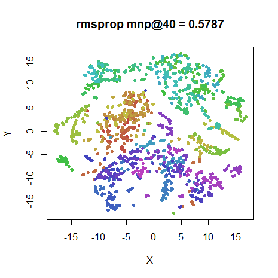 |
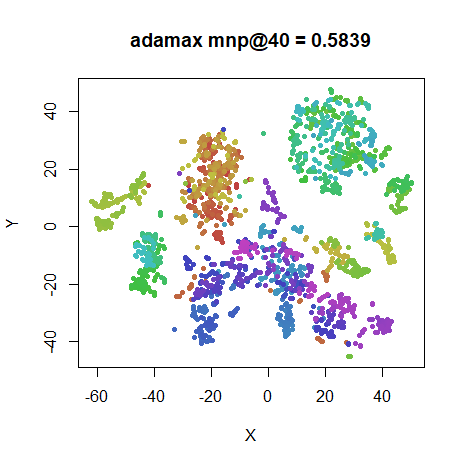 |
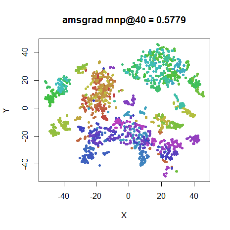 |
COIL-20
 |
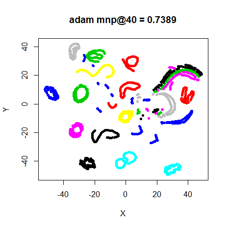 |
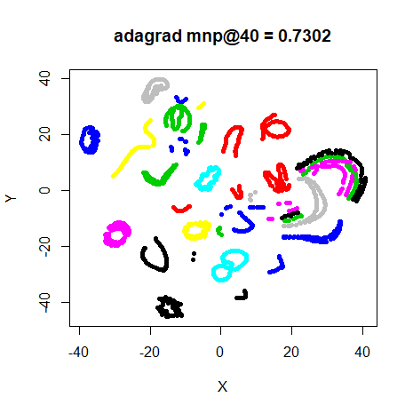 |
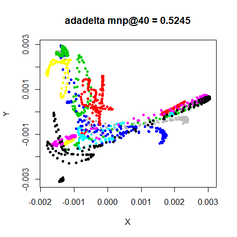 |
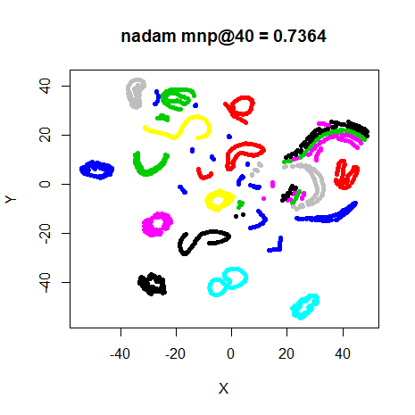 |
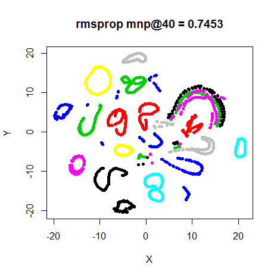 |
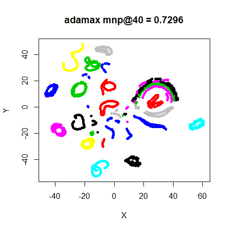 |
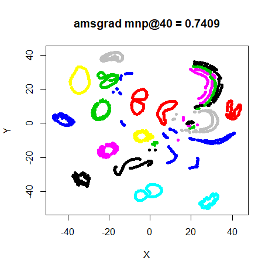 |


Conclusions
Everything except Adadelta works amazingly well. Adadelta, which has no controllable learning rate parameter, makes extremely small updates, so it gets nowhere close to converging, or in fact reducing the initial error by even the third decimal place for the larger datasets.
Everything else does very well, although not as well as Delta-Bar-Delta. On the other hand, these methods only require one gradient evaluation per iteration so are much faster than something like spectral directions.
For smaller datasets, the usual story is apparent: pretty much any method gets the job done (apart from Adadelta). For MNIST, there’s a bit more difference apparent, with more of the clusters being split up compared to the DBD results. Nadam and Adagrad do the best job here. Looking at MNIST and Fashion, RMSProp also seems to be lagging behind in terms of convergence. In general, the degree of convergence wasn’t as far along after 1000 iterations with any of these alternative algorithms compared to DBD, probably because the learning rate might be on the conservative side. On the other hand, having to tune the parameters for each dataset and algorithm would remove much of its appeal anyway.